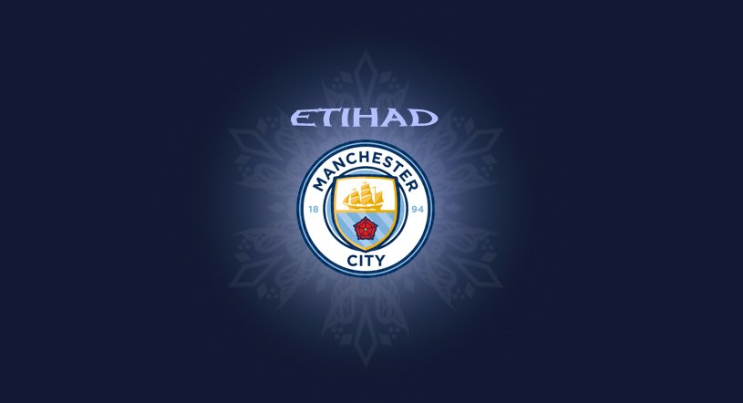

프리미어 리그 프로 축구 클럽 맨시티

개요
영국 잉글랜드 프리미어 리그 소속 프로 축구 클럽. 연고지는 맨체스터. 홈 구장은 에티하드 스타디움.
맨체스터의 이름을 가진 축구 팀은 그레이터맨체스터 주 안에 무수히 있지만 개중 그레이터맨체스터 주의 중심도시인 맨체스터 시를 연고로 하는 유일한 1부 리그 팀이라는 것이 특징이다. 맨체스터 유나이티드 FC는 그레이터 맨체스터 주의 트래포드(Trafford)가 연고지이고 볼턴 원더러스 FC, 위건 애슬레틱 FC는 그레이터 맨체스터 주의 볼턴과 위건에 속해있다. 자세한 사항은 맨체스터 항목 참조.
1880년 세인트 마크스라는 이름으로 창단하여 1887년 아드윅 AFC로 바꿨다가 1894년에 맨체스터 시티로 처음 시작하게 되었다.
구단주는 아랍 에미리트의 셰이크 만수르 빈 자예드 알 나얀이다. 법적으로는 그가 소유하고 있는 아부다비 유나이티드 그룹(ADUG)이 시티 풋볼 그룹의 대주주가 되고 시티 풋볼 그룹과 그 회장인 칼둔 알 무바라크가 그를 대신하여 구단을 지배하는 형태로 이루어져 있으나, 만수르가 투자청을 세운 이유는 맨시티를 인수하기 위해서이고 그 예하의 시티 풋볼 그룹은 맨시티 인수 이후 전 세계의 다른 구단들(뉴욕 시티 FC, 멜버른 시티 FC 등)과 함께 지배하기 위해서 생겨난 경영 구조일 뿐이므로 최종 결재권자는 여전히 만수르이다.
한국과 관계
국내의 경우 예전에만 해도 라이벌 맨유에게 인지도나 팀 전력에서나 밀리고, 특히나 한국에서는 박지성의 존재로 인해 맨유의 인기가 넘사벽인지라 맨시티는 만수르 인수 이후 우승권으로 발돋움하고도 한국 팬덤이 EPL내 다른 빅 클럽에 비해 비교적 얕다고 평가받았다. 그러나 현재는 꾸준한 뉴비 유입으로 팬층이 전에 비해 꽤 두터워진 편이며, 그 이유로 펩 과르디올라 부임 이후 리그 우승이나 우승경쟁을 놓지 않는 모습을 보여주는 점도 있지만, 의외로 프리미어리그 모든 팀들 가운데서도 매우 왕성한 축에 속하는 구단의 對 한국 마케팅 역시 큰 역할을 했다. 심지어 박지성이 앰배서더로 재직중인 맨유나 손흥민이 주축으로 활동하는 토트넘과 비교해도 앞섰으면 앞섰지 결코 밀리지 않는 수준.[41] 직원 중 아예 한국 마케팅 담당자가 따로 있다고 한다.
출처
-
위키피디아